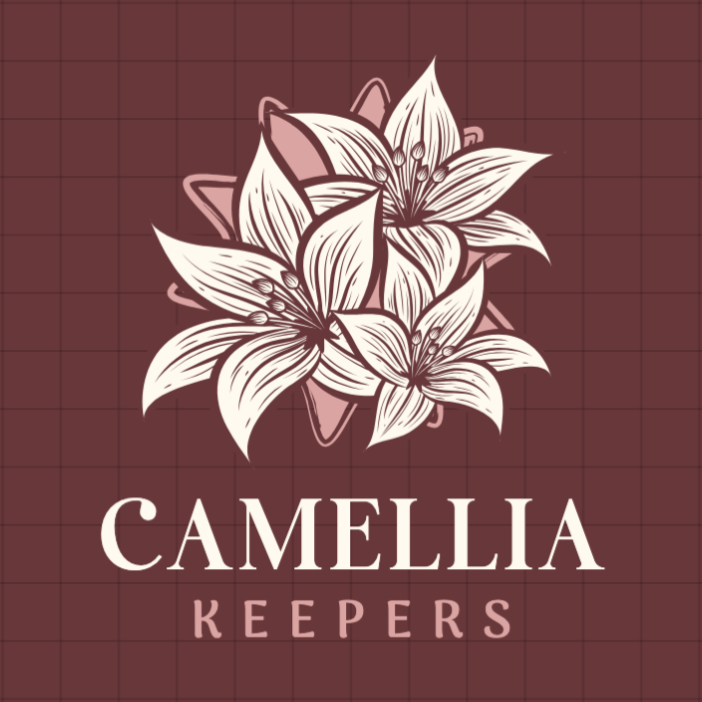

CAMELLIAKEEPERS
A student community on Jeju Island committed to the proper remembrance and recognition of the April 3rd Incident.
In Memory of April 3rd, 1948 · Jeju, Korea
Remembranceis our responsibility.
Camellia Keepers is a community of students and residents of Jeju Island, committed to the proper commemoration and recognition of the April 3rd Incident — a chapter of Korean history that shaped an island, silenced thousands, and demands that we never forget.
Featured Journals
The camellia falls whole.So did they.
Join the CommunityAbout
Camellia Keepers
A community of students and residents of Jeju, committed to ensuring the April 3rd Incident is properly learned, remembered, and never reduced to a footnote.
The Camellia of Jeju
The dongbaek — camellia japonica — blooms through the coldest months of the Jeju winter. Unlike most flowers, its petals do not scatter one by one; the entire bloom falls at once, intact, from the branch.
It is this quality that gave the camellia its meaning after the April 3rd Incident. The sudden, whole falling of the flower became a symbol for the thousands of lives cut short without warning during the massacres of 1948 to 1954. Today, the red camellia badge is worn at every annual memorial on Jeju, and the flower serves as the official emblem of the April 3rd Incident.
Camellia Keepers takes its name from this symbol — and from the responsibility to preserve the memory it carries.
The red camellia is worn each April 3rd by those who gather at the Jeju 4·3 Peace Park to remember the victims. The flower has become inseparable from the act of memory itself.
The April 3rd Incident
The Jeju 4·3 Incident presents a tragic history of dehumanisation, persecution, and oppression — born from the political fractures of a nation divided against its will.

From Silence to Memory
For decades after the massacres, information about the April 3rd Incident was suppressed. Survivors and their families were silenced. It was only in recent years that the full scope of what occurred became widely accessible and acknowledged.
Today, few people in Korea are entirely unaware of the incident — yet awareness has not corrected widespread misconceptions. A considerable proportion still hold inaccurate understandings unless they have conducted independent research. Secondary school curricula only began addressing 4·3 in the early 2010s; it was added to the middle school curriculum in 2025.
Our Responsibility
As residents and students studying on Jeju Island, we believe it is crucial to face the responsibility of properly learning and commemorating the 4·3 Incident. This is our main objective.
While it may be impossible to fully convey the damage inflicted upon the victims, we believe it is equally valuable to raise awareness and expose the case to a wider audience. Camellia Keepers aims to bolster the recognition and correct perception of the April 3rd Incident — through articles, community, and an unwavering commitment to memory.

The Board
Camellia Keepers is led by students and residents of Jeju Island, united by a shared commitment to the memory of April 3rd.
Journals
Research, reflection, and personal accounts relating to the April 3rd Incident and the history of Jeju Island.
Camellia Archive
A growing collection of documents, research papers, and testimonies preserved for the historical record of the April 3rd Incident.
Become aKeeper
Join a community of students and residents of Jeju committed to ensuring the April 3rd Incident is remembered — accurately, widely, and always.